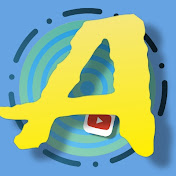

Depuis la fin de ma troisième, je crée du contenu vidéo sur YouTube. Cette expérience m'a permis d'apprendre à travailler le rythme d'un montage et de m'exercer sur différents logiciels tels que Wondershare Filmora ou Premiere Pro. J'ai ainsi acquis des bases en autodidacte en observant la composition de vidéos de créateurs comme Squeezie, Wankil Studio ou encore Amixem.
Sur cette chaîne, j'ai fait des best-of de mes parties de jeu, une narration de série sur un jeu vidéo, un test utilisateur sur l'application BeReal ainsi que des tutos Speedrun. Toutes ces vidéos m'ont permis, au fur et à mesure, d'acquérir de l'expérience en narration, réalisation, montage et motion design, tout en devenant plus à l'aise pour parler au micro.
Grâce à ces trois ans d'activité, j'ai gagné en expérience en m'essayant au motion design, à l'animation 2D ainsi qu'à l'animation 3D basique. Je pense que ma pratique sur YouTube m'aide fortement lors du dérushage de mes courts-métrages : cela m'a habitué à identifier rapidement le plan le mieux rythmé, à trouver un "cut" fluide qui ne soit pas trop agressif sans pour autant ralentir le rythme, ce qui peut se jouer à l'image près.